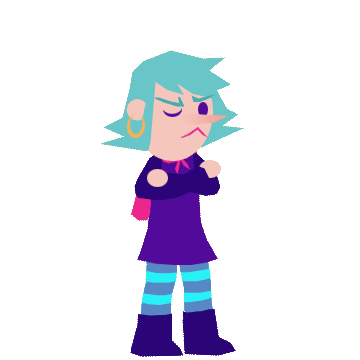
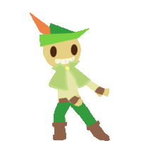
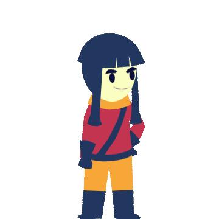

Story
The game follows The Bard, a cheerful traveler who sets out on a journey to prevent the end of the world.
How to Play
Choose a color
Each color on the wheel represents a different musical note.
Sing the note
The Bard uses singing to communicate and interact with the world.
Solve the puzzle
Different notes and melodies help the player progress.
Main Characters
Miriam
A witch who accompanies the Bard.

The Bard
A wandering singer and the main character.

Audrey
A powerful and more serious character.
